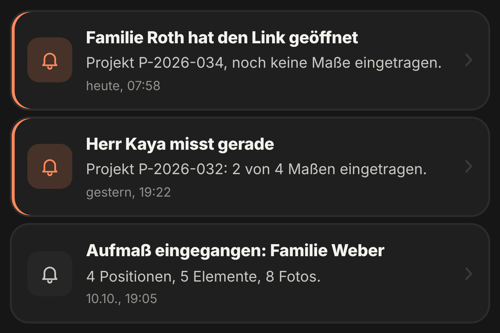

Danach
Sie sehen,
wer misst.
Im Projekt sehen Sie, ob der Link geöffnet ist und wie weit Ihr Kunde misst.
- Link gesendet
- Link geöffnet
- Kunde misst
- Aufmaß da

Danach
Im Projekt sehen Sie, ob der Link geöffnet ist und wie weit Ihr Kunde misst.
